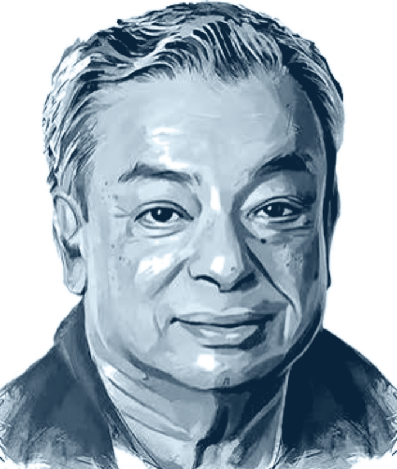

Dairy Sphere
Your World of Dairy Technology
A focused educational platform for Dairy Technology students and professionals — connecting concepts, practical learning, equipment and innovation.
Explore Now →Explore Dairy Sphere
Learn • Process • Innovate
Library
Access notes, research papers, standards & study material.
Browse Library →Virtual Lab
Lab tests, procedures, calculators & practical learning.
Start Lab →Equipment Atlas
Explore machines with detailed images & working principles.
Explore Atlas →Quiz Zone
Test your dairy technology knowledge with topic-wise interactive quizzes.
Take Quiz →Dr. Verghese Kurien
A few thoughts from the life and philosophy of a leader who placed farmers, professional management, innovation and rural development at the centre of India’s dairy movement.

His philosophy connected people and progress. Kurien believed that India’s strength would come from the partnership between the wisdom of rural people and the skills of professionals. He saw dairying not simply as a technical activity, but as an instrument of economic and social change.
He repeatedly placed farmer empowerment and good management at the heart of development. In his words, “I am in the business of empowerment. Milk is just a tool in that.” He also emphasized trust in grassroots cooperatives and believed that true development meant the development of men and women.
His approach to innovation was equally practical: innovation grows when skilled people work in an environment that allows ideas to flourish. He believed that rural development, education, modern science and technology could together create new opportunities for villages and the people who sustain them.
“Dairying is such an instrument of change: an instrument not only of technical change, but also of economic and social change.”
For Dairy Sphere, these ideas reflect a simple principle: learn deeply, apply knowledge responsibly, and use technology to create meaningful impact.